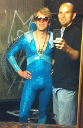

FOR IMMEDIATE RELEASE
Press Contact:
Hide Your Children.
Roger Wodehouse is Coming.

LOS ANGELES, August 30, 2011 –
What happens when a 70s glam rock icon gets his own BBC children’s show? LOST MOON RADIO, the LA-based comedy and music collective, answers that very question in its new show, “Roger Wodehouse’s Androgymnasium,” running Sept 23 – Oct 29 at Café-Club Fais Do-Do. Audiences are invited to enter the surreal, sexually ambiguous world of Wodehouse in this “live taping” of his iconoclastic children’s show. It’s an evening of original sketches, songs, and very tight costumes, all developed by the group recently named “Best of Comedy" at the 2011 Hollywood Fringe Festival.
After a trip to the Androgymnasium the fun continues, as each performance is followed by a set featuring one of LA’s brightest indie bands. For those seeking a low-stress, high-fun holiday, there’s also a SPECIAL HALLOWEEN PERFORMANCE on October 29th. Featuring entertainment from LOST MOON RADIO plus three stellar music groups, the night is a sure-fire bet for a truly unique All Hallows Eve.
Over its two-and-a-half years on the LA comedy scene, LOST MOON RADIO has distinguished itself as a true stand out. Its 2009 holiday show earned the praise: “Off the charts. A show like SNL should just scoop up the entire cast of Lost Moon Radio. It would be 100 times better” (LiveComedyLA.com). In June 2010, the LAist named LOST MOON RADIO an “EDITOR'S PICK...make sure you get a chance to see this must-see show.” Stage and Cinema described LOST MOON RADIO's December 2011 show as “The Groundlings but with a better batting average.” LOST MOON RADIO’s recent appearance at the 2011 Hollywood Fringe Festival earned them the LA Weekly’s “Best of the Hollywood Fringe” distinction and the praise: “This sterling company is not at the Fringe to find their footing –- they’re here to show everyone else how perfection can be accomplished” (Tony Frankel, Stage and Cinema).
“Roger Wodehouse’s Androgymnasium” features Ryan Harrison, Jen Burton, Dan Mahoney, Dan Oster, and Frank Smith. Musical accompaniment by The Moon Units. Written by Frank Smith and Ryan Harrison, with music by Dylan Ris, Rich Ramberg, Michael Wells, Ryan Harrison, and Frank Smith. Directed by Lauren Ludwig. Produced by Monica Miklas. Stage Managed by Jean Ansolabehere. Lighting by Brandon Baruch. Costumes by Rachel Weir. Property design by Nell Rutledge-Leverenz. Sound design by Dave McKeever.
WHAT: Lost Moon Radio presents “Roger Wodehouse’s Androgymnasium”
WHERE: Café-Club Fais Do-Do. 5253 W. Adams Blvd, Los Angeles, CA 90016.
WHEN: All performances start at 9pm unless otherwise noted.
Friday, 9/23 – featuring Wild Pink Horse
Saturday, 10/1 – feat. Live Band Karaoke w/ The Moon Units
Saturday, 10/8 – featuring Anna Su
Saturday, 10/15 – SPECIAL COMEDY DOUBLE-BILL
9pm: The Story Pirates
10pm: Roger Wodehouse’s Androgymnasium
Saturday, 10/22 – featuring Walter Spenser
Saturday, 10/29 – HALLOWEEN EVENT
feat. The Damselles and Live Band Karaoke w/The Moon Units
ADMISSION: For regular shows (September 23-October 22) tickets are $13 online, $15 at the door. For the Halloween Event (October 29) tickets are $17 online, $20 at the door. All shows are 18+.
RESERVATIONS: Tickets go on sale Thursday, 9/1. For tickets and more information visit www.lostmoonradio.com.
For more information and press comps please contact:
# # # END # # #